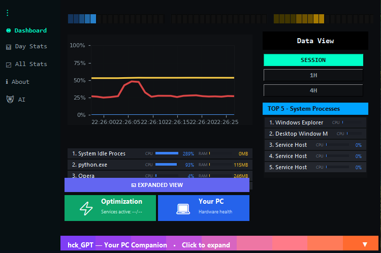
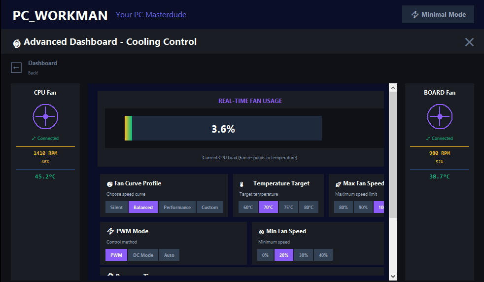

Technical
Building AI-Powered System Monitor: Architecture Deep Dive
Jak zintegrowałem GPT-4 API z monitoring loops w Windows WMI. Thread safety, rate limiting, context management.
Czytaj na Medium →
Koniec tajemniczym lagom i skokom napięcia – AI wyjaśnia wszystko w kontekście.
Alternatywa dla MSI Afterburner i HWMonitor z prawdziwą inteligencją.

Nie tylko monitoring – prawdziwa inteligencja w akcji
Wykrywa bottleneck w grach w czasie rzeczywistym – "CPU nie daje rady w CS2? Zamknij Chrome i Discord."
Automatyczne wykrywanie minersów kryptowalut i podejrzanych procesów pożerających zasoby w tle.
AI prognozuje problemy zanim uderzą – overheating, disk failure, RAM overflow. Działasz proaktywnie, nie reaktywnie.
Zaawansowana kontrola wentylatorów z custom fan curves. Cicho podczas browsing, turbo w gaming.
To nie jest kolejny monitor. To asystent AI, który rozumie twój PC.
Napięcie/temperatura skacze? AI definiuje przyczynę z kontekstem: "Chrome spowodował skok o 15°C – zamknij 47 tabs" + sugeruje fix. MSI Afterburner pokazuje tylko liczby.
Narzędzia optymalizacyjne działają zawsze w tle – zero codziennego babrania. GeForce Experience wymaga ciągłych aktualizacji i logowania. PC_Workman = set & forget.
Zadaje 18 pytań diagnostycznych, sugeruje usługi Windows do wyłączenia (optymalizacja), wyłącza po zgodzie. One-click revert wszystko! Żadne inne narzędzie nie ma AI asystenta.
Auto-detect motherboard (pierwszy widok pokazuje model), wizualna mapa podzespołów (CPU/RAM/GPU/Disk/Bateria) dla PC i laptop. Szybki dostęp do health/info – kliknij komponent, widzisz szczegóły. HWInfo nie ma wizualizacji!
Wpisz objawy – AI symuluje odpowiedź (demo)
Porównanie z MSI Afterburner, HWMonitor, GPU Tweak, GeForce Experience, HWInfo
| Feature | MSI Afterburner | HWMonitor | GPU Tweak | GeForce Exp. | HWInfo | PC_Workman |
|---|---|---|---|---|---|---|
| Wyjaśnianie przyczyn skoków | ❌ | ❌ | ❌ | ❌ | ❌ | ✅ z kontekstem AI |
| 2D mapa komponentów | ❌ | ❌ | ❌ | ❌ | ❌ | ✅ z auto-detect |
| AI asystent optymalizacji | ❌ | ❌ | ❌ | ❌ | ❌ | ✅ hck_GPT |
| Wykrywanie minersów | ❌ | ❌ | ❌ | ❌ | ❌ | ✅ automatyczne |
| Gaming bottleneck detection | Partial | ❌ | Partial | ❌ | ❌ | ✅ realtime AI |
| Predictive alerts | ❌ | ❌ | ❌ | ❌ | ❌ | ✅ przed problemem |
| Fan curve control | ✅ | ❌ | ✅ | ❌ | ❌ | ✅ + AI profile |
| One-click optimization | ❌ | ❌ | Limited | Limited | ❌ | ✅ + revert |
| Wymaga logowania | ❌ | ❌ | ❌ | ✅ 😒 | ❌ | ❌ prywatność |
| Open Source | ❌ | ❌ | ❌ | ❌ | ❌ | ✅ GitHub |
Jedyna alternatywa z prawdziwą inteligencją AI
Sprawdź na GitHubBuilding in public na starym laptopie – autentyczna historia indie developera
22 grudnia straciłem pracę w Holandii. Wróciłem do Polski z jedną rzeczą – determinacją do zbudowania czegoś własnego. PC_Workman powstaje na laptopie z 2014 roku, który regularnie osiąga 90°C+. Nie czekam na idealny sprzęt – buduję teraz.
To nie jest glamorowy startup story. To 6+ miesięcy grindowania po nocach, refactoring kodu, nauka AI integration od zera. Ale każda linia kodu jest prawdziwa. Każdy feature rozwiązuje mój realny problem.
"Constraint breeds creativity. Stary laptop nauczył mnie optymalizować każdy feature. To samo doświadczenie, które PC_Workman daje użytkownikom."
Beta Premium dla pierwszych 100 – subskrybuj newsletter i zdobądź early access!
Insights z development journey
Jak zintegrowałem GPT-4 API z monitoring loops w Windows WMI. Thread safety, rate limiting, context management.
Czytaj na Medium →Reality check indie developera. Od taxi driver do ML engineering – droga przez kod, community, i constraint-based creativity.
Zobacz na LinkedIn →MSI Afterburner pokazuje OSD. PC_Workman wyjaśnia bottlenecki. Dlaczego gaming analytics to przyszłość monitoringu.
Thread na X →Jak 10-letni laptop z thermal throttlingiem nauczył mnie optymalizować. PC_Workman powstał z mojego bólu użytkownika.
Zobacz repo na GitHub →Najczęściej zadawane pytania
hck_GPT zadaje 18 pytań diagnostycznych o twoim użytkowaniu PC (gaming, work, streaming, itp.). Na podstawie odpowiedzi AI sugeruje konkretne usługi Windows do wyłączenia (np. telemetria, niepotrzebne services). Przed każdą zmianą pytasz o zgodę – full control. Wszystko można cofnąć jednym kliknięciem ("Revert All").
Tak! PC_Workman powstał na laptopie z 2014 roku (i7-4710HQ, 8GB RAM). Jest zoptymalizowany pod low-resource usage. Monitoring działa w tle z minimalnym footprintem, AI queries są cachowane lokalnie. Jeśli działa na moim 10-letnim laptopie z 90°C, zadziała na twoim sprzęcie.
Obecnie PC_Workman działa w trybie local inference dla podstawowych funkcji (wykrywanie minersów, gaming analytics). hck_GPT (full AI assistant) wymaga API key OpenAI, ale planuję integrację z lokalnymi modelami (Ollama, LM Studio) w wersji 2.0. Koszt API to ~$0.50-2/miesiąc przy normalnym użyciu.
MSI Afterburner to świetne narzędzie do GPU overclocking i OSD, ale pokazuje tylko surowe dane. PC_Workman idzie dalej: wyjaśnia przyczyny skoków temperatury/napięcia ("Chrome spowodował – zamknij tabs"), wykrywa suspicious processes, ma AI asystenta optymalizacji, 2D mapę komponentów, predictive alerts. To różnica między "widzę liczby" a "rozumiem co się dzieje".
Dla podstawowego monitoringu (CPU/RAM/GPU usage) – nie. Dla zaawansowanych funkcji (fan control, wyłączanie services, deep hardware access) – tak. PC_Workman prosi o uprawnienia tylko gdy są potrzebne. Cały kod jest open source na GitHub – możesz zweryfikować co robi.
Obecnie PC_Workman jest w Alpha v1.5+. Pełna wersja 2.0 (z local AI models, advanced gaming integrations, cloud sync) planowana na Q2 2025. Subskrybuj newsletter żeby dostać early access do beta – pierwsze 100 osób dostaje premium features za darmo!